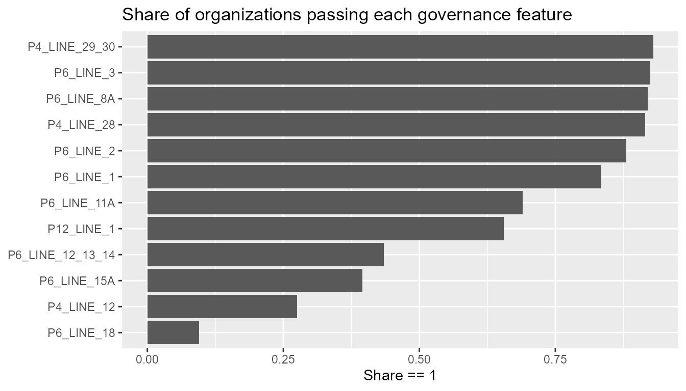
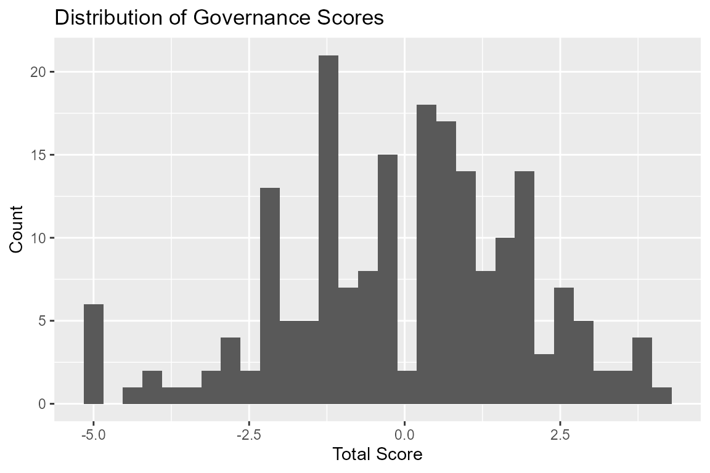

Governance Workflow
Olivia Beck
2026-08-11
Source:vignettes/governance-workflow.Rmd
governance-workflow.RmdGovernance Workflow
This vignette walks through the full path from raw 990 fields to governance scores and shows a few ways to explore the results.
Step 1: Get input data
get_features() consumes raw 990 efile fields from Part IV, Part VI, Part XII, and Schedule M. In production these come from the companion panel990 package via get_governance_data(years = 2022); see vignette("download-data") for the field list, the required tables, and the full-990 filter. Here we use the bundled example, a 5,000-organization sample of raw 2022 fields.
Step 2: Build the feature matrix
get_features() cleans the raw fields and appends 12 binary governance features. Blank or missing yes/no responses are treated as 0 regardless of how the source encoded them (NA or ""), so results do not depend on how the tables were read.
features_example <- get_features(dat_example)
features_example |>
select(ORG_EIN, starts_with("P6_"), P12_LINE_1) |>
head()
#> ORG_EIN P6_LINE_1 P6_LINE_11A P6_LINE_12_13_14 P6_LINE_15A P6_LINE_18
#> 849 521314461 1 1 1 1 0
#> 2532 832563658 1 0 0 0 1
#> 2699 870470748 0 1 1 1 0
#> 2478 752538361 1 1 0 0 0
#> 531 650144766 1 0 0 0 0
#> 3673 883636365 0 0 0 0 0
#> P6_LINE_2 P6_LINE_3 P6_LINE_8A P12_LINE_1
#> 849 1 1 1 1
#> 2532 1 1 1 1
#> 2699 1 1 1 1
#> 2478 0 1 1 0
#> 531 0 1 1 1
#> 3673 1 1 0 0Each feature is an indicator of a good-governance practice. We can look at how common each practice is in the sample:
feature_cols <- c("P12_LINE_1", "P4_LINE_12", "P4_LINE_28", "P4_LINE_29_30",
"P6_LINE_1", "P6_LINE_11A", "P6_LINE_15A", "P6_LINE_18",
"P6_LINE_2", "P6_LINE_3", "P6_LINE_8A", "P6_LINE_12_13_14")
rates <- features_example |>
summarise(across(all_of(feature_cols), ~ mean(.x == 1, na.rm = TRUE))) |>
tidyr::pivot_longer(everything(), names_to = "feature", values_to = "rate")
ggplot(rates, aes(x = reorder(feature, rate), y = rate)) +
geom_col() +
coord_flip() +
labs(title = "Share of organizations passing each governance feature",
x = NULL, y = "Share == 1")
Step 3: Calculate the scores
get_scores() applies the pre-fit factor model and appends six factor scores and a total.score.
scores_example <- get_scores(features_example)
scores_example |>
select(ORG_EIN, total.score) |>
head()
#> ORG_EIN total.score
#> 849 521314461 1.84480679
#> 2532 832563658 1.41783202
#> 2699 870470748 -0.08681385
#> 2478 752538361 -0.27424699
#> 531 650144766 0.60652413
#> 3673 883636365 -5.00061728
ggplot(scores_example, aes(x = total.score)) +
geom_histogram(bins = 30) +
labs(
title = "Distribution of Governance Scores",
x = "Total Score", y = "Count"
)
Joining external data (optional)
Governance scores are most useful alongside other organizational characteristics. You can join the scores to the NCCS Business Master File (BMF) on ORG_EIN to relate governance to size, sector, or geography. The snippet below is illustrative (not run here, as it downloads a large file):
library(readr)
library(stringr)
# Unified BMF (single file across years)
bmf_url <- paste0(
"https://nccsdata.s3.us-east-1.amazonaws.com/",
"bmf/unified/v1.2/UNIFIED_BMF_V1.2.csv"
)
bmf <- read_csv(bmf_url)
bmf$EIN <- str_pad(gsub("\\D", "", bmf$EIN), 9, pad = "0")
plot_data <- scores_example |>
left_join(bmf, by = c("ORG_EIN" = "EIN"))
ggplot(plot_data, aes(x = log(ASSETS), y = total.score)) +
geom_point(alpha = 0.4) +
labs(title = "Governance Scores vs. Total Assets",
x = "log(Total Assets)", y = "Total Governance Score")